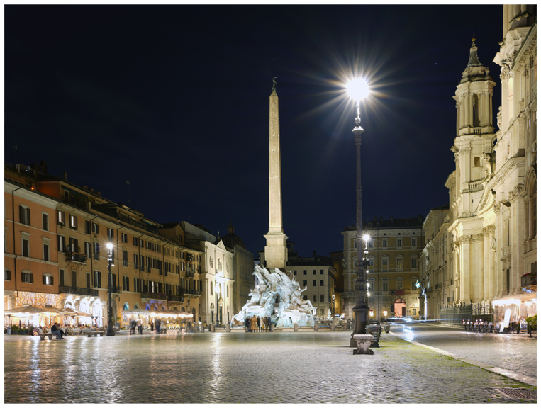
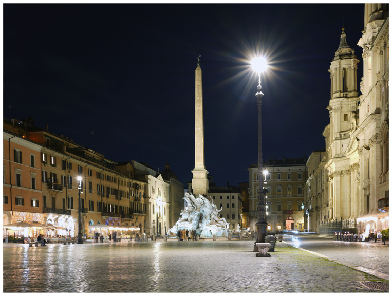
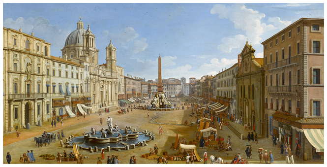
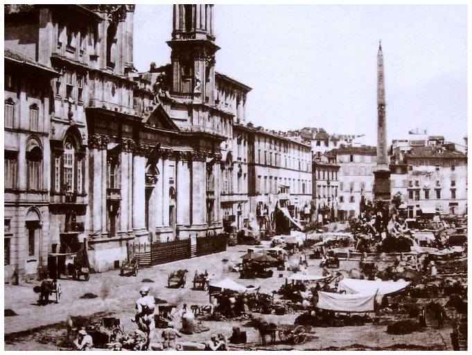

HOW IT WAS BUILT
Piazza Navona occupies the exact site of the Stadium of Domitian, an ancient Roman athletic arena built by Emperor Domitian in the 1st century AD.
The stadium was completed around 86 AD, measuring about 275 meters long and holding up to 30,000 spectators.
By the 17th century, under Pope Innocent X, the site was transformed into the magnificent Baroque piazza seen today.
The pope commissioned architects such as Gian Lorenzo Bernini and Francesco Borromini to redesign the square’s fountains and church façades.


 Click to see more info
Click to see more info